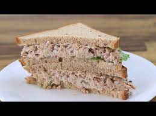

Tuna Sandwich

Description
Today I will teach you how to make a tuna sandwich.
If you are using canned tuna packed in olive oil, you can use as is, without draining
it. Or, if you don't like the oil the tuna is packed in, you can drain it, and add
back in 2 teaspoons of your favorite extra virgin olive oil.
Ingredients
- 1 (5- or 6-ounce) can tuna packed in olive oil, undrained
- 1/3 cup cottage cheese
- 2 tablespoons mayonnaise
- 1/4 cup finely chopped red onion
- 1 celery stalk, finely chopped
- 1 tablespoon capers
Steps
- In a medium bowl, toss together the canned tuna, cottage cheese, mayonnaise, red onion, celery, capers, lemon juice, dill, parsley and Dijon mustard until combined.
- Serve tuna salad on toast, either open faced, or between two slices of bread with lettuce and tomatoes, if you wish. For a low-carb option, serve on sliced lettuce.
- Enjoy!
Return to home page